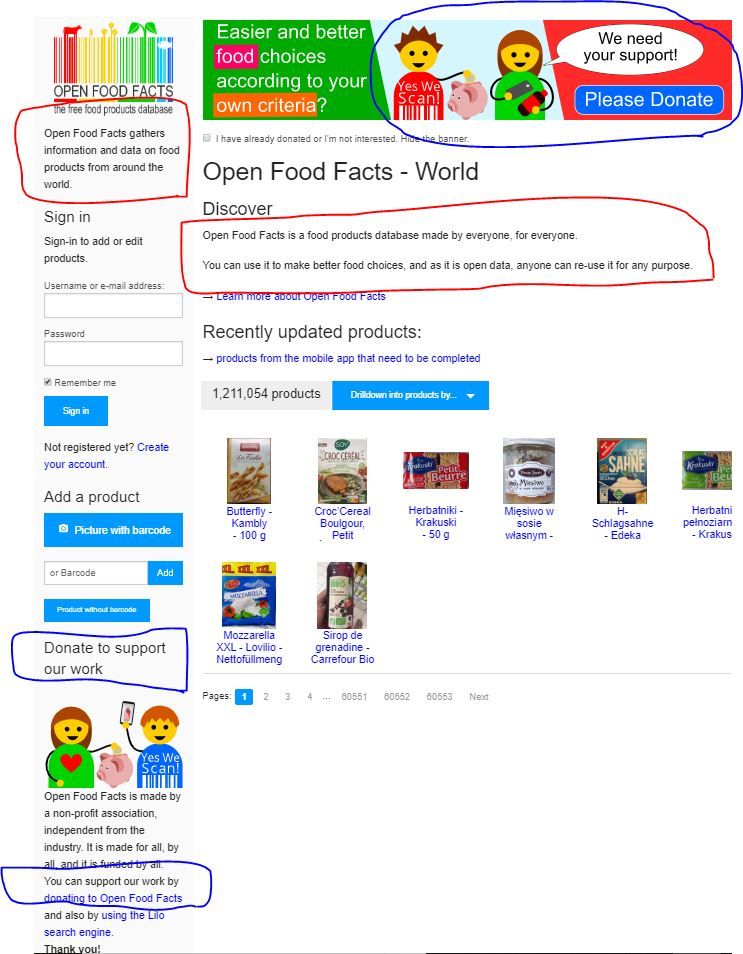
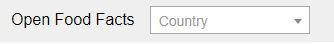
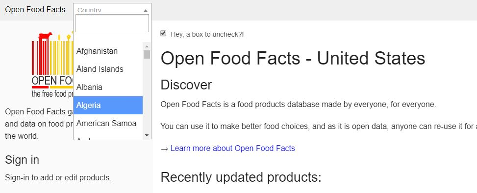
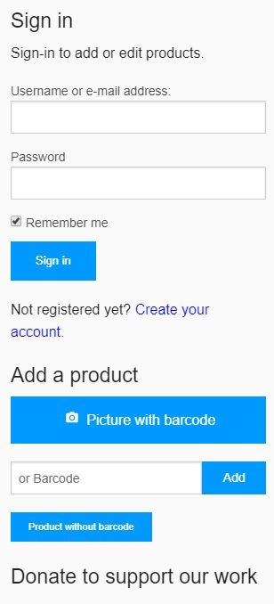

As I was searching for open-source development projects, I found a non-profit that looked appealing but could benefit from improved design.
It is Open Food Facts which is a database of global food products.
Clutter
Are there distractions that makes scanning difficult?
Visually it is fairly busy but not overwhelming. While there are no unrelated ads, the placement of various graphics and text make it difficult to hone in on important information. Most notably, there are repeated elements, for example, their donation banner, introductory text, and "get app". Similar language on the page adds cognitive load and makes the user question if the information is the same or not.
Usability
Is it pleasant to use and navigate?
Buttons and graphics mostly lead to expected results. The checkmark for hiding the banner is a nice touch. The country button however is a usability flaw, as once you have selected a country, you're unsure of how to switch it back to the default "world" setting. Clicking the home button doesn't work, so the only way is to re-enter the URL.
 Architecture
Is the site organized effectively?
The navigation bar is adequate for navigation, and the home button works as intended. However, the main function of the website (searching for products), is not front and center. There are options for contributing to the website (sign in, add a product), as well as options for discovering content. More options on one page doesn't necessarily mean more efficiency for the user.
Ambiguity
Is there language that makes the user uncertain?
Besides the country selection, there is also the "sign in" on the left sidebar. It states that you need to sign in to add or edit products, but the "add a product" is also below it. It is uncertain whether you need to log-in before you add a product.
Suggestions
Clutter - Do not repeat similar elements. Try to integrate text that sound similar. For example, the introductory text could be in one paragraph instead of separate areas of the page.
Usability - Redirect the home button so it leads back to the "world" page.
Architecture - Could re-design the webpage to center around the search function.
Ambiguity - More clarity about the incentives of signing up and what is required to add/edit products.